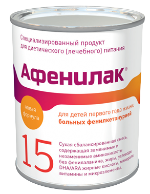

მსოფლიოში ყველაზე გავრცელებული ფორმა კლასიკური ფენილკეტონურიაა. აუცილებელია სისხლის პლაზმაში აღმოჩენილი მაღალი ფენილალანინის ფონზე სასწრაფოდ დიეტოთერაპიის დაწყება,
რაც გულისხმობს მკაცრად განსაზღვრული ცილის დღიური ნორმის მიღებას. ჯანმრთელი ადამიანისთვის ფენილალანინის ნორმა სისხლის შრატში შეადგენს 2მ.დლ - ზე ნაკლებს.
ფენილკეტონურიის მქონე პირთათვის, აღნიშნული ნორმა 4-6 მ.დლ ფარგლებში მერყეობს და იცვლება ასაკობრივად. ორგანიზმის სიცოცხლის და ენერგიის წყარო არის საკვები, რომელიც შედგება
ცილებისგან, ცხიმებისგან და ნახშირწყლებისგან. საკვების მიღების შემდეგ, ცილა ორგანიზმში იშლება ამინორმჟავებად და ფენილალანინი ამ გზით ხვდება ორგანიზმში.
გამორიცხულია სრულად ხორცის, თევზის, კვერცხის, რძის ყველა ნაწარმის, თხილეულის, ბურღულეულის მიღება. ასეთი შეზღუდული არჩევანის
ფონზე, ორგანიზმისთვის საჭირო ნუტრიენტების შესავსებად წარმოებულია ფორმულა - ყველა ამინორმჟავას -1 ფენილალანინი, რასაც ორგანიზმი ვერ
ამუშავებს. პირები, ვისაც ფენილკეტონურია აქვს დადასტურებული, ხდებიან ოკუპირებული ტერიტორიებიდან დევნილთა, შრომის,
ჯანმრთელობისა და სოციალური დაცვის სამინისტროს პროგრამის ბენეფიციარები. სამინისტრო სახელმწიფო ტენდერების საშუალებით შეიძენს ამინორმჟავების ნაკრებს. აღნიშნული დანამატი უსასყიდლოდ გადაეცემა 18 წლის ასაკამდე თითოეულ ბენეფიციარს.
დანამატის ოდენობას და სახეობას ბავშვის/ზრდასრულის ასაკისა და წონის შესაბამისად ნიშნავს ექიმი/გენეტიკოსი, რომელიც რეგისტრირებული
გაიდლაინების
შესაბამისად მართავს დიეტას.
